Su Unodelposto chi è del posto regala qualche ora del suo tempo: un caffè, una passeggiata nel quartiere, due chiacchiere al parco. Tu cerchi l'esperienza che ti incuriosisce, mandi una candidatura con due righe su di te e, se chi ti accoglie la approva, entri nella chat di gruppo dove arriva il punto d'incontro esatto.
Non si paga niente, né prima né dopo. In questa fase pilota gli incontri sono semplici e in luoghi pubblici: al massimo 6 Ospiti (accompagnatori compresi), al massimo 3 ore, e ogni esperienza viene controllata dallo staff di Unodelposto prima di essere pubblicata.
Cerca
Dal sito pubblico o da Esplora: per comune, raggio, data e tipo, anche sulla mappa.
Candidati
Presentati in poche righe. È una richiesta: il posto è tuo solo dopo l'approvazione.
Segui
In Partecipazioni vedi lo stato, apri la chat e aggiungi l'incontro al calendario.
Avvisa
Se non puoi più venire, usa "Non posso più venire" prima dell'inizio.
Se partecipi
Dalla ricerca all'incontro, passo dopo passo.
Cercare dal sito pubblico
Dal menu in alto scegli Esperienze. Trovi l'elenco delle esperienze in programma e, su computer, una mappa sulla destra. Sul telefono passi da una vista all'altra con Elenco e Mappa.
Con i filtri scegli Dove (scrivi il nome del comune), il Raggio (10, 25 o 50 km), Quando (Oggi, Domani, Questo weekend, Prossimi 7 giorni, Prossimi 30 giorni), il Tipo di esperienza e la Lingua. Sul sito pubblico puoi anche limitare la ricerca a chi ha l'Identità verificata o è Nella Rete di un Ente.
Le posizioni sulla mappa sono approssimate: l'indirizzo esatto arriva solo in chat, dopo l'approvazione.
Le pagine per regione e per comune
Ogni regione e ogni comune con almeno un'esperienza o una persona del posto ha la sua pagina, per esempio "Esperienze a Torino". La raggiungi dal percorso in alto nella scheda di un'esperienza (Home / Esperienze / Piemonte / Torino). Nella pagina del comune trovi le esperienze In programma, le persone del posto che vivono lì e il pulsante Cerca nei dintorni, che apre la ricerca intorno a quel comune.
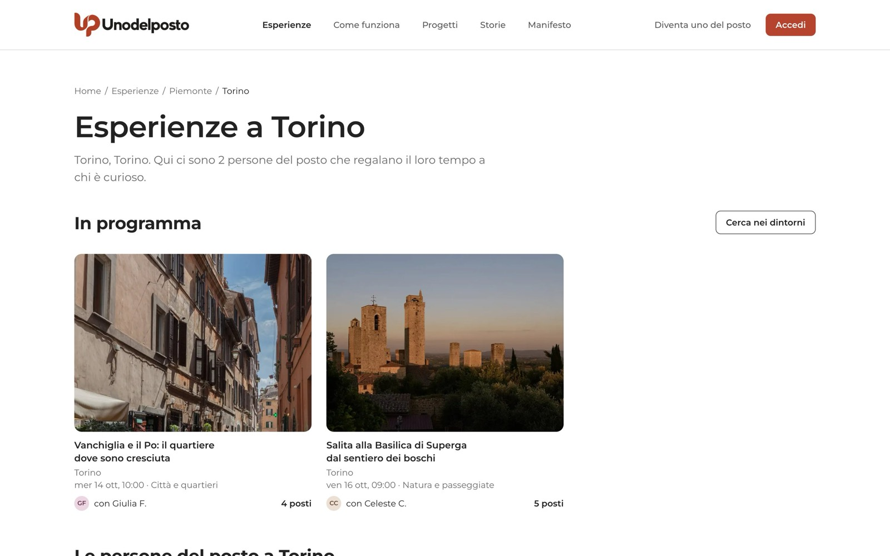
Cercare da Esplora
Quando hai fatto l'accesso, la ricerca si chiama Esplora e la trovi nel menu a sinistra (sul telefono nella barra in basso). Esplora parte dal comune del tuo profilo e ha gli stessi filtri del sito pubblico:
- Dove: scrivi il nome del comune, oppure premi Vicino a me. Il browser ti chiede il permesso di usare la posizione; la ricerca la usa solo in quel momento e non la salva. La prima volta ti viene chiesto anche "Ricordare che sei a…?": se rispondi sì, la tua home ti mostra le esperienze intorno a quel comune per 30 giorni.
- Raggio, Quando e Tipo: come sul sito pubblico.
- Con posti liberi: mostra solo le esperienze dove c'è ancora posto. È attivo all'inizio.
- Chi accoglie ha l'identità verificata: solo persone che un Ente ha incontrato e riconosciuto.
- Chi accoglie è nella Rete di un Ente della zona: solo persone che un'associazione, un Comune o una Pro Loco della zona conosce di persona.
Premi Cerca. Sopra i risultati vedi quante esperienze hai trovato e il link Vedi sulla mappa. A destra, Ordina per ti fa scegliere tra Data, Distanza e Novità.
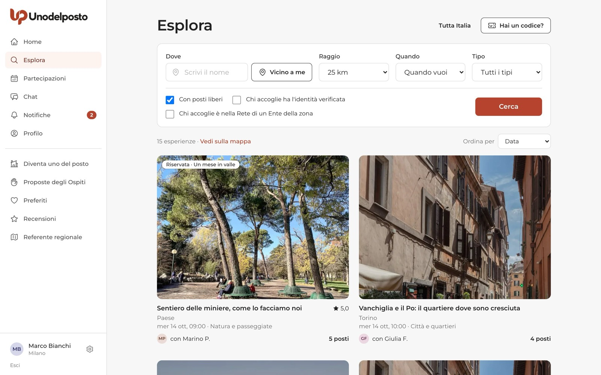
In alto a destra ci sono due pulsanti. Tutta Italia toglie il limite del comune e ti mostra tutto quello che è in programma. Hai un codice? serve se un Ente ti ha dato un codice breve: con il codice di un Progetto entri tra i partecipanti e puoi candidarti anche alle esperienze con l'etichetta "Riservata"; con il codice della Rete di un Ente chiedi di entrare nella sua Rete. Se non hai un codice, non ti serve: le esperienze aperte a tutti sono già lì.
Leggere la scheda di un'esperienza
Apri un'esperienza per leggere tutto prima di candidarti. In alto trovi categoria, l'etichetta Gratuita, comune, data e ora, durata, posti liberi e lingue. Il riquadro "Come partecipare" ti ricorda che la candidatura è una richiesta.
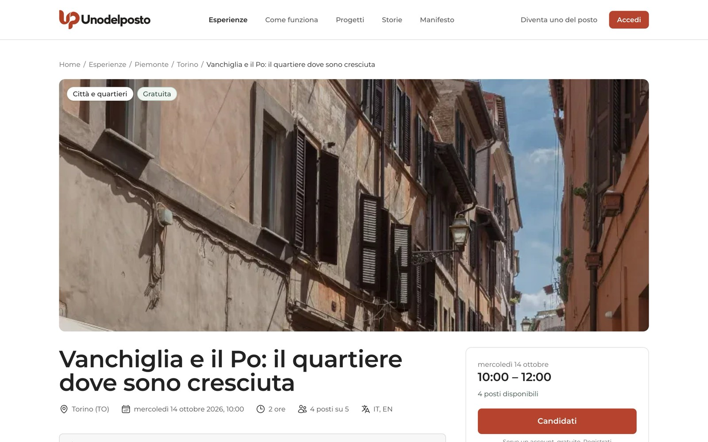
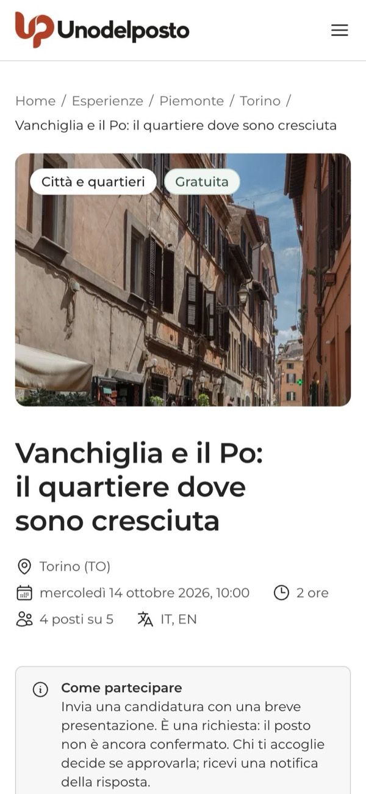
Scorrendo trovi:
- Cosa faremo: il racconto di chi ti accoglie.
- Cosa portare e, se ci sono, le note sull'Accessibilità.
- Quanto costa: "Niente: a chi ti accoglie non si paga nulla, né prima né dopo." Se lungo la strada vi fermate a prendere qualcosa, ognuno paga per sé, solo se vuole. A volte trovi anche le "Spese personali facoltative", come un biglietto del tram.
- Zona d'incontro: una zona generica e un cerchio sulla mappa. Il punto esatto arriva in chat dopo l'approvazione.
- Chi ti accoglie: nome, da quando è del posto, voto, due righe su di sé e il link Vedi il profilo. Più sotto, "Cosa dicono di…" mostra le ultime recensioni.
- Prima di andare: tre consigli di sicurezza e il link alla pagina "Sicurezza e fiducia".
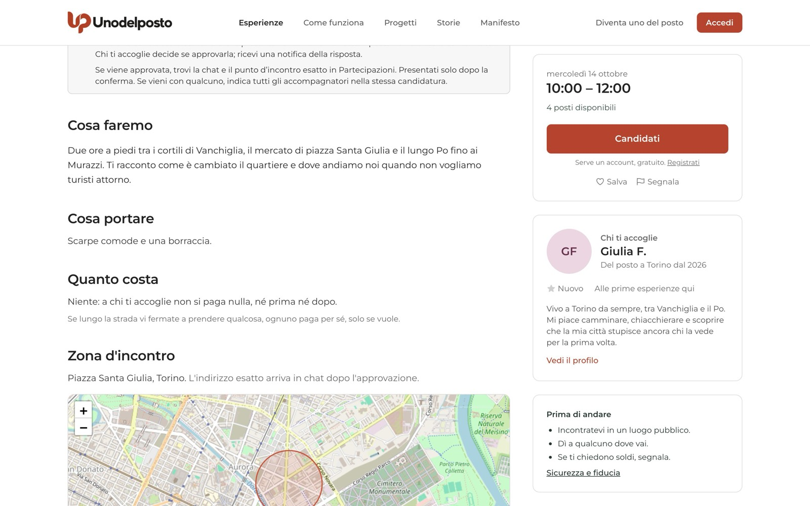
Salvare tra i preferiti
Sotto il pulsante "Candidati" c'è Salva, con il cuore. Dopo il clic diventa "Salvata" e l'esperienza compare in Preferiti, nel menu a sinistra. Le esperienze concluse o non più disponibili finiscono in fondo, sotto "Concluse o non più disponibili". Accanto c'è anche Segnala, se qualcosa nell'annuncio non ti convince.
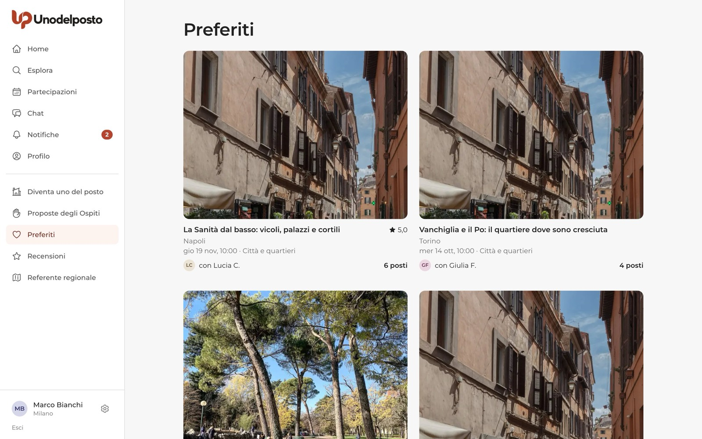
Candidarti
- Premi "Candidati". Lo trovi nel riquadro a destra della scheda (sul telefono sotto il titolo).
- Leggi i consigli, solo la prima volta. Alla prima candidatura compare "Prima della tua prima candidatura": cinque consigli per incontrare persone dal vivo. Premi Ho letto, continua.
- Presentati. Nel campo Il tuo messaggio racconta chi sei, da dove vieni e perché ti interessa quell'incontro (da 10 a 500 caratteri). Chi ti accoglie legge queste righe per decidere.
- Indica chi viene con te, se serve. Se l'esperienza accetta accompagnatori, vedi "Vieni con qualcuno?". Premi Aggiungi una persona e scrivi nome e cognome di ognuno. Ogni accompagnatore occupa un posto e chi ti accoglie vede i nomi. Se qualcuno è minorenne, indicalo: viene con te e ne sei responsabile per tutto l'incontro. Gli accompagnatori non entrano in chat.
- Conferma le regole. Spunta "Confermo di aver letto le Regole della comunità".
- Invia. Premi Invia la candidatura. Chi ti accoglie riceve un avviso.
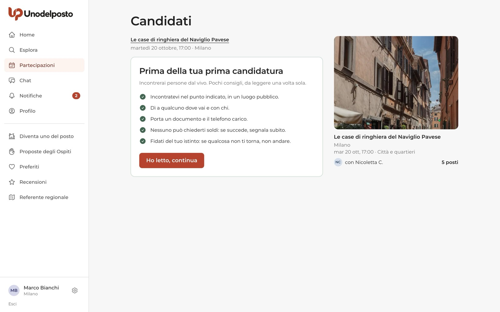
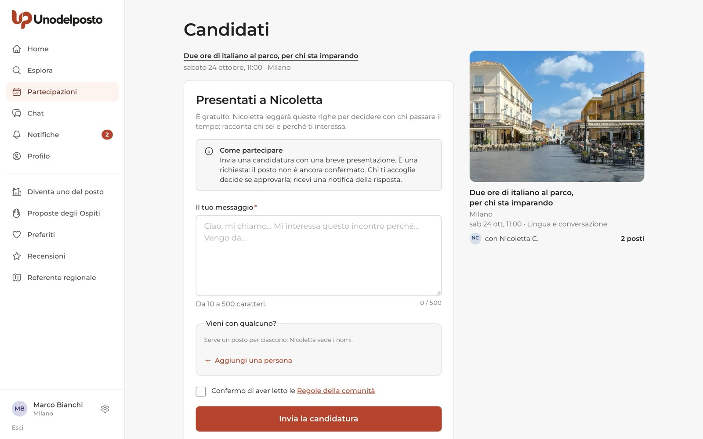
Gli stati della candidatura
Ogni candidatura ha un'etichetta colorata che ti dice a che punto è.
| Stato | Cosa significa |
|---|---|
| In attesa | Hai inviato la candidatura e chi ti accoglie la sta valutando. Il posto non è ancora confermato. |
| Approvata | Il posto è tuo, anche per gli accompagnatori indicati. Sei nella chat di gruppo e vedi il punto d'incontro esatto. |
| Non accettata | Questa volta non c'è posto per te. Vedi solo "… ha scelto altri partecipanti questa volta": il motivo resta privato. Succede anche quando i posti finiscono. |
| Ritirata | Hai ritirato la candidatura o hai detto che non puoi più venire. |
| Rimossa da chi accoglie | Chi ti accoglie ti ha tolto dall'incontro, con un motivo che trovi nella notifica. Non presentarti. |
| Assente | Dopo l'incontro chi ti accoglie ha segnato che non sei venuto. L'assenza resta nel tuo profilo. |
Se è chi ti accoglie ad annullare l'esperienza, ricevi un avviso e la pagina della partecipazione ti dice "L'esperienza è stata annullata".
Le mie partecipazioni
Dal menu scegli Partecipazioni. La pagina "Le mie partecipazioni" ha tre schede:
- In arrivo: gli incontri approvati che devono ancora finire. Da qui premi Apri chat o Non posso più venire.
- In attesa: le candidature ancora senza risposta. Qui puoi Ritira candidatura.
- Passate: incontri conclusi, candidature non accettate, ritirate o annullate. Dopo un incontro trovi anche Scrivi recensione o la scritta "Recensione inviata".
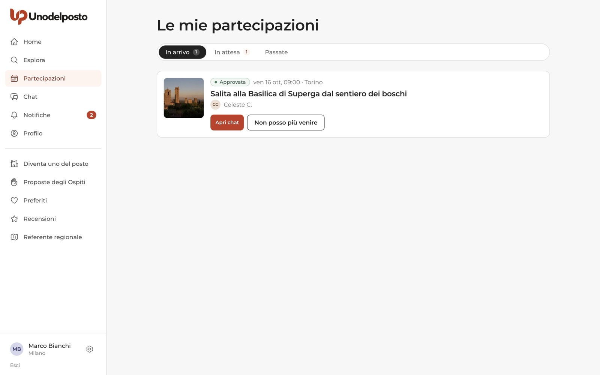
Il dettaglio della partecipazione
Apri una partecipazione per vedere tutto in una pagina. In cima un riquadro ti dice cosa fare adesso, per esempio "Aspetta la risposta di chi ti accoglie". Sotto trovi lo stato, quanto manca all'incontro, Quando e Dove, il messaggio che hai inviato e la Cronologia (candidatura inviata, approvata…). A destra c'è il riquadro di chi ti accoglie.
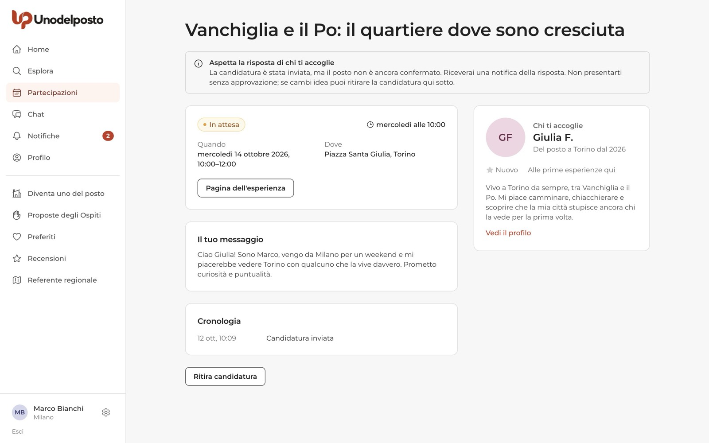
Quando la candidatura è approvata il riquadro in cima diventa "Il tuo posto è confermato" e compaiono:
- Punto d'incontro esatto, che trovi anche in chat;
- Apri la chat, per salutare il gruppo e accordarvi sugli ultimi dettagli;
- Aggiungi al calendario: scegli Google Calendar oppure Apple, Outlook e altri, che scarica un file .ics da aprire con il tuo calendario.
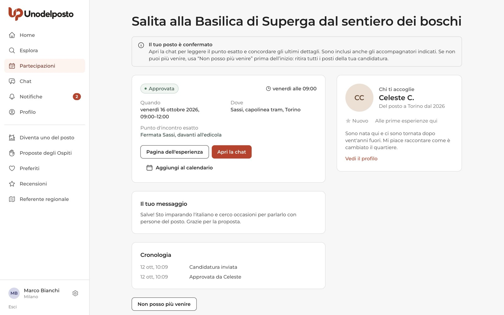
Promemoria prima dell'incontro
Non devi ricordarti tutto da solo. Il giorno prima ricevi un promemoria ("Domani: …") e circa due ore prima un secondo avviso ("Tra poco: …"). Anche nella chat di gruppo compare un messaggio con l'ora e il punto d'incontro. Puoi scegliere come ricevere gli avvisi in Impostazioni, nella scheda Notifiche.
Se non puoi più venire
- Apri la partecipazione. Da "In arrivo" o dal dettaglio.
- Premi "Non posso più venire". Ti viene chiesta una conferma. Se la candidatura è ancora in attesa, il pulsante si chiama "Ritira candidatura".
- Conferma. Liberi il tuo posto e quelli dei tuoi accompagnatori, esci dalla chat e chi ti accoglie riceve un avviso.
Puoi farlo fino all'inizio dell'incontro. Avvisa il prima possibile: chi ti accoglie ha preparato quelle ore e magari ha detto di no a qualcun altro per tenerti il posto.
Dopo l'incontro
Finito l'incontro, chi ti accoglie conferma che c'è stato e segna chi non è venuto. Tu ricevi un avviso "Com'è andata?" e hai 14 giorni per scrivere una recensione, dalla scheda Passate o dalla voce Recensioni del menu. Come funzionano le recensioni lo spieghiamo nella parte 05.
Se sei stato segnato come assente per errore, puoi inviare una segnalazione allo staff di Unodelposto.
Domande frequenti
Devo pagare qualcosa?
No. A chi ti accoglie non si paga nulla, né prima né dopo. Se qualcuno ti chiede soldi, usa "Segnala" e scegli "Mi è stato chiesto denaro".
Perché non vedo l'indirizzo preciso?
Per la sicurezza di tutti, prima dell'approvazione vedi solo la zona. Il punto esatto compare nella partecipazione e in chat quando la candidatura è approvata.
Posso portare qualcuno con me?
Sì, se l'esperienza lo prevede: lo vedi nel modulo di candidatura alla voce "Vieni con qualcuno?". Indica il nome di ogni persona. Ognuna occupa un posto.
Quanto devo aspettare la risposta?
Dipende da chi ti accoglie. Quando risponde ricevi una notifica. Intanto puoi candidarti ad altre esperienze, fino a 5 candidature in attesa.
Non trovo niente vicino a me. Cosa faccio?
Allarga il raggio o premi "Tutta Italia". Puoi anche scrivere una Proposta dell'Ospite e raccontare cosa ti piacerebbe fare: le persone del posto di quel comune possono candidarsi.
Ti serve su carta?
La stessa guida in PDF, da stampare o inviare.